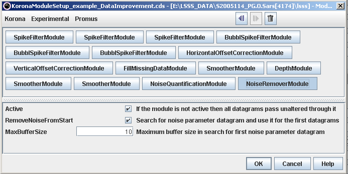

Example 1 - Data improvement through noise removal and smoothing
The module setup below shows one way to improve data. The data flows through each of the modules starting with the one
in the upper left corner and ending with the one in the lower right.

There are three spike filters used to remove
very strong values with a vertical extent, and replace those values with the median value of the surrounding
measurements. The spike filters are set up to work at different depths: 10-100 m, 100-250 m, 250-2000 m, i.e.
for each depth, there is only one spike-filter used. The reason why there are three different is the shape of the
beam, so that spikes at shallow depths appear to be stronger.
The three bubble-spike filters work in a similar
way as the spike-filters, except that vertical regions with significantly lower values than the surroundings are
replaced by the median of the surrounding values. The filters are called bubble-spike-filters because such
regions often appear when there are bubbles under the ship.
The HorizontalOffsetCorrectionModule adjusts the data at different acoustic frequencies for horizontal positioning
of the transducers. The transducer position is read from a reference-file specified by
HorizontalOffsetCorrectionModule.
The VerticalOffsetCorrectionModule corrects the data at different frequencies for the
frequency-, and filter-dependent pulse-transmission delay. The transmission delays (i.e. the frequency-dependent
vertical correction of the measurements) are read from a reference-file specified by
VerticalOffsetCorrectionModule.
The FillMissingDataModule duplicate data at one frequency if data at a given time does not exist for that frequency,
but do exist for other frequencies.
The first smoother module smooths only in horizontal direction, so that the
bottom-detection done by the Bottom detection module is better if the backscatter from the bottom varies much. The two next
SmootherModule smooths data above and below the detected bottom. These smoothings are done separately to avoid
losing fish that is close to the bottom. The smoothing is done below the bottom because those data are used to
quantify noise in the NoiseQuantificationModule, and those results are used by the NoiseQuantificationModule
to remove noise.
Results are shown below: the left panel is before data improvement for all 6 frequencies, the right panel is after.